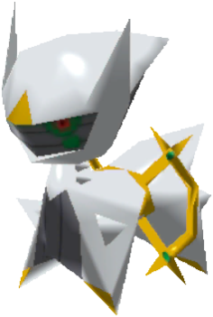

Ink that reacts to your hand.
Wacom-style pressure changes the character of each stroke.

Krakens CanvasFree local whiteboard for Wacom-first thinking
Draw the thought before it becomes a sentence. A black-grid canvas with pressure-sensitive ink, always-on-top pinning, and a bridge for sharing sketches with Codex.
Download it, open it, draw. No account wall.
Your canvas lives on your machine.
Stripe donations are optional, never a feature gate.
Download
The current build is a Windows-focused local Electron app. The next packaging step is a clean installer, but the project already runs locally from the included launcher.
Start Inkboard.cmd
Workflow
Wacom-style pressure changes the character of each stroke.
Pin Krakens Canvas while Discord, notes, or code sit underneath.
Share the current canvas as a local image when words are slower.
Move around the thought without babysitting the tool.
Support
Krakens Canvas is intended to stay free to use. Donations are for people who want to support the project, not unlock the project.